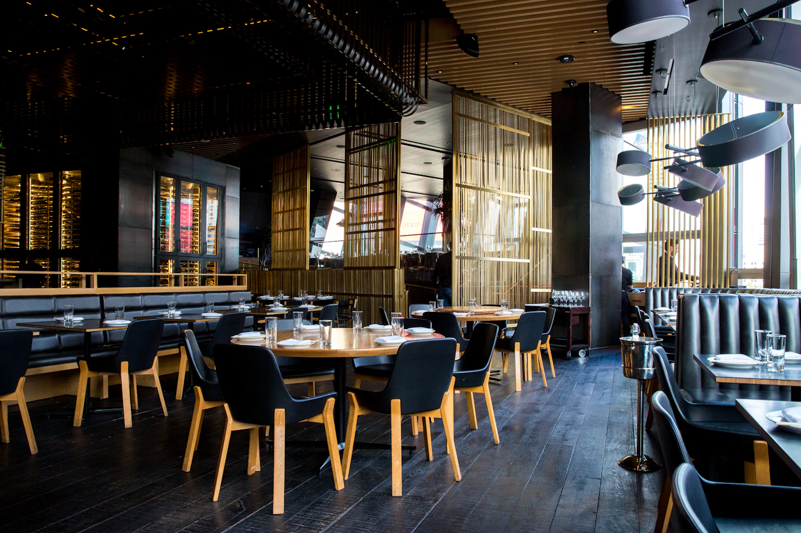

Burrata cremosa levemente defumada, tomates confitados no azeite de ervas, pesto de manjericão e focaccia de fermentação natural.
Gastronomia & Fogo de Chão (Fictício)
Sabor & Brasa — Cortes Nobres e Cozinha Autoral
Ingredientes frescos, fermentação lenta e grelha a lenha. Explore nosso cardápio digital interativo com filtragem instantânea por categoria e restrições alimentares.

Sabor & Brasa • Parrilla Contemporânea & Adega
Cardápio Digital Ao Vivo
Cardápio Digital Filtrável
Nossos Pratos (Valores Ilustrativos)
Combine categorias, restrições alimentares (Vegetariano, Vegano, Sem Glúten) ou pesquise por ingrediente em tempo real.
Preferências:
Cubos de banana-da-terra grelhada, leite de tigre cítrico de maracujá, cebola roxa, coentro fresco e crocante de castanha-do-pará.
Corte alto preparado na brasa de acácia, acompanhado de musseline rústica de mandioquinha defumada e chimichurri da casa.
Arroz arbóreo finalizado com creme de castanhas nobres, mix de shimeji, portobello e eryngui tostados na grelha e azeite trufado.
Frutos do mar selecionados finalizados no carvão, batatas bolinha douradas no alho assado, páprica defumada e azeite cítrico.
Cheesecake de forno em alta temperatura com interior cremoso, topo caramelizado e calda artesanal de amora e framboesa.
Fatias de abacaxi pérola grelhadas com especiarias, raspas de limão taiti, hortelã e sorbet artesanal de coco sem lactose.
Infusão autoral sem álcool preparada com redução de tangerina fresca, água com gás natural e ramo de alecrim tostado na hora.
Nenhum prato corresponde aos filtros selecionados
Limpe os filtros ou digite outro ingrediente para ver todas as opções demonstrativas.
Galeria Fotográfica Interativa (Lightbox)
Ambiente & Experiência na Brasa
Clique em qualquer fotografia abaixo para abrir o modal acessível em alta resolução (suporta navegação por setas do teclado e tecla Escape).
Dados Fictícios para Demonstração
Horários & Localização Ilustrativa
Em um projeto real para o seu restaurante, esta seção exibe seu endereço integrado ao mapa, orientações de estacionamento e botão direto para reservas.
- Endereço Ilustrativo: Rua das Figueiras, 420 — Bairro Jardim (Cidade Fictícia)
- Terça a Sexta: 12h às 15h30 (Almoço Executivo) • 19h às 23h30 (Jantar)
- Sábados e Domingos: 12h às 17h (Almoço na Brasa)
- Facilidades: Acessibilidade plena, espaço kids e opções veganas/sem glúten.
Deseja um site como este para o seu restaurante?
Substitua cardápios lentos em PDF por uma página rápida, com a identidade da sua casa, fácil de atualizar e pronta para receber reservas pelo celular.